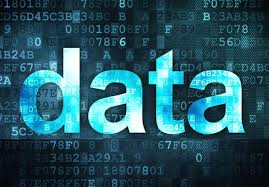
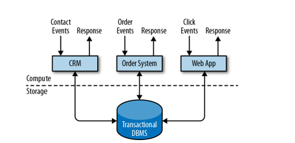

Od plików płaskich do Data Mash
Rozwój technologii informatycznych spowodował dostęp do niewyobrażalnych ilości nowego zasobu jakim są ustrukturyzowane jak i nieustrukturyzowane dane.

Dane przyczyniły się do powstania tysięcy nowych narzędzi do generowania, zbierania, przechowywania i przetwarzania informacji na niespotykaną dotąd skalę.
Zasób ten nie jest nowością i dostępny jest od bardzo dawna. Jednak dopiero po wprowadzeniu systemu pisma można było zacząć prowadzić zapis i przetwarzanie w postaci rachunkowości czy rejestrów różnych rzeczy takich jak: zaludnienie w krajach, spisy rzek, jezior, najgłębsze miejsca itp.
Pojawienie się nowych wyzwań naukowych czy biznesowych staje się możliwe do realizacji dzięki budowie systemów opartych na otwartym oprogramowaniu, jak również dzięki wykorzystaniu domowych komputerów do wspomagania przetwarzania ogromnych ilości danych.
Dziś systemy takie jak SAS, Apache Hadoop, Apache Spark, Apache Flink dzięki rozwiązaniom chmurowym używane są na szeroką skalę w wielu instytucjach i firmach niemal w każdej dziedzinie. Narzędzia te wykorzystywane są w bankowości, opiece zdrowotnej, naukach przyrodniczych, produkcji, sektorze publicznym czy sprzedaży.
Epoka danych stawia przed nami coraz to nowsze wyzwania związane nie tylko z ilością, ale i z czasem przetwarzania danych.
Nowe wyzwania biznesowe to między innymi:
- inteligentna reklama tysięcy produktów dla milionów klientów,
- przetwarzanie danych o genach, RNA czy też białkach genus,
- inteligentne wykrywanie różnorodnych sposobów nadużyć wśród setek miliardów transakcji kart kredytowych,
- symulacje giełdowe oparte o tysiące instrumentów finansowych
- …
Wszystkie algorytmy uczenia maszynowego wymagają danych ustrukturyzowanych zapisanych w tabelarycznej postaci (tensory).
Zorganizowane są one w kolumnach cech charakteryzujących każdą obserwację (wiersze). Przykładem mogą być takie cechy jak: płeć, wzrost czy ilość posiadanych samochodów, na podstawie których można przewidywać czy klient będzie spłacał kredyt czy też nie. Takie przewidywanie również oznaczane jest jako cecha. Zmienne te dobierane są tak, by łatwo można je było pozyskać. Dzięki tak otrzymanym tabelom cech możemy stosować algorytmy tj. XGBoost lub regresji logistycznej w celu wyznaczenia odpowiedniej kombinacji zmiennych wpływających na prawdopodobieństwo dobrego albo i złego klienta.
Podstawowe systemy bazodanowe związane z językiem SQL również realizują modele danych, w których dane ładnowane są do (ustrukturyzowanych) tabel.
Dane nieustrukturyzowane to takie, które nie są ułożone wtabelarycznej postaci.
!Uwaga - nie oznacza to, iż dane nie możemy przetworzyć do jakiejś postaci tabelarzycznej.
Przykładem może być dźwięk, obrazczy tekst. Poszczególne litery, częstotliwości czy piksele nie niosą ze sobą żadnych informacji. Nie tworzą osobnych cech, co jest kluczowe dla odróżnienia ich od danych ustrukturyzowanych.
Zna typy danych ustrukturyzowanych jak i nieustrukturyzowanych (K2A_W02, K2A_W04, O2_W04, O2_W07)
Źródła danych
Do trzech największych “generatorów” danych należą:
dane społecznew formie tekstów (tweety, wpisy w portalach społecznościowych, komentarze), zdjęć czy plików wideo. Przydatne do problemów biznesowych realizujących ocenę zachowań i nastrojów konsumentów w analizach marketingowych.IoT: dane pochodzące z czujników, czy też logi działania urządzeń i użytkowników (np. na stronie www).dane transakcyjne: czyli ogólnie to co w każdej chwili generowane jest jako transakcje pojawiające się zarówno w trybie online jak i w trybie offline.
Rzeczywisty proces generowania danych
Dane generowane są w postaci nieograniczonej - pojawiają się na skutek ciągłych działań systemów. W swoim telefonie wygenerowałeś dziś (a nawet na tych zajęciach!) wiele danych. Czy na następnych zajęciach lub tez jutro nie będziesz ich generował?
Dane zawsze generowane są jako jakaś forma strumienia danych.
Systemy obsługujące strumienie danych: - hurtownie danych - systemy monitorujące działania urządzeń (IoT) - systemy transakcyjne - systemy analityczne stron www - reklamy on-line - media społecznościowe - systemy logowania - ….
firma to organizacja, która generuje i odpowiada na ciągły strumień danych. Zobacz
W przetwarzaniu wsadowym źródłem (ale i wynikiem przetwarzania) danych jest plik. Jest on zapisywany raz i można się do niego odwołać (może na nim działać wiele procesów - zadań). Nazwa pliku to element identyfikujący zbiór rekordów.
W przypadku strumienia zdarzenie jest generowane tylko raz przez tzw. producenta (zwanego też nadawcą lub dostawcą). Powstałe zdarzenie przetwarzane może być przez wielu tzw. konsumentów (odbiorców). Zdarzenia strumieniowe grupowane są w tzw. tematy (ang. topics).
Big Data
,,Big Data is like teenage sex: everyone talks about it, nobody really knows how to do it, everyone thinks everyone else is doing it, so every one claims they are doing it.’’ — Dan Ariely, Professor of Psychology and Behavioral Economics, Duke University
one, two, … four V
- Volume (Objętość) - rozmiar danych produkowanych na całym świecie przyrasta w tempie wykładniczym.
- Velocity (Szybkość) - tempo produkowania danych, szybkości ich przesyłania i przetwarzania.
- Variety (Zróżnicowanie) - tradycyjne dane kojarzą się nam z postacią alfanumeryczną złożoną z liter i cyfr. Obecnie mamy do dyspozycji obrazy, dźwięki, pliki wideo, strumienie danych z IoT
- Veracity (Wiarygodność) - Czy dane są kompletne i poprawne? Czy obiektywnie odzwierciedlają rzeczywistość? Czy są podstawą do podejmowania decyzji?
- Value - The value that the data actually holds. In the end, it’s all about cost and benefits.
Celem obliczeń nie są liczby, lecz ich zrozumienie R.W. Hamming 1962.
Modele przetwarzania danych
Dane w biznesie przetwarzane są praktycznie od zawsze. W ciągu ostatnich dziesięcioleci ilość przetwarzanych danych systematycznie rośnie co wpływa na proces przygotowania i przetwarzania danych.
Trochę historii
- Lata 60-te : Kolekcje danych, bazy danych
- Lata 70-te : Relacyjne modele danych i ich implementacja w systemach OLTP
- 1975 : Pierwsze komputery osobiste
- Lata 80-te : Zaawansowane modele danych, extended-relational, objective oriented, aplikacyjno-zorientowane itp.
- 1983 : Początek internetu
- Lata 90-te : Data mining, hurtownie danych, systemy OLAP
- Później : NoSQL, Hadoop, SPARK, data lake
- 2002 : AWS , 2005: Hadoop, Cloud computing
Większość danych przechowywana jest w bazach lub hurtowniach danych. Standardowo dostęp do danych sprowadza się najczęściej do realizacji zapytań poprzez aplikację.
Sposób wykorzystania i realizacji procesu dostępu do bazy danych nazywamy modelem przetwarzania. Najczęściej używane są dwie implementacje:
Model Tradycyjny
Model tradycyjny - przetwarzanie transakcyjne w trybie on-line, OLTP (on-line transaction processing). Świetnie sprawdza się w przypadku obsługi bieżącej np. obsługa klienta, rejestr zamówień, obsługa sprzedaży itp. Wykorzystywany w systemach Enterprise Resource Planning (ERP) Systems, Customer Relationship Management (CRM) software, and web-based applications.

Model ten dostarcza efektywnych rozwiązań m.in do:
- efektywnego i bezpiecznego przechowywania danych,
- transakcyjnego odtwarzanie danych po awarii,
- optymalizacji dostępu do danych,
- zarządzania współbieżnością,
- przetwarzania zdarzeń -> odczyt -> zapis
Co w przypadku gdy mamy do czynienia z:
- agregacjami danych z wielu systemów (np. dla wielu sklepów),
- raportowanie i podsumowania danych,
- optymalizacja złożonych zapytań,
- wspomaganie decyzji biznesowych.
Badania nad tego typu zagadnieniami doprowadziły do sformułowania nowego modelu przetwarzania danych oraz nowego typu baz danych - Hurtownie Danych (Data warehouse).
Model OLAP
Przetwarzanie analityczne on-line OLAP (on-line analytic processing).
Wspieranie procesów analizy i dostarczanie narzędzi umożliwiających analizę wielowymiarową (czas, miejsce, produkt).
Proces zrzucania danych z różnych systemów do jednej bazy nazywamy Extract-Transform-Load (ETL) (normalizacja i encoding and schema transaction).
Analiza danych z hurtowni to przede wszystkim obliczanie agregatów (podsumowań) dotyczących wymiarów hurtowni. Proces ten jest całkowicie sterowany przez użytkownika.
Przykład
Załóżmy, że mamy dostęp do hurtowni danych gdzie przechowywane są informacje dotyczące sprzedaży produktów w supermarkecie. Jak przeanalizować zapytania:
- Jaka jest łączna sprzedaż produktów w kolejnych kwartałach, miesiącach, tygodniach ?
- Jaka jest sprzedaż produktów z podziałem na rodzaje produktów ?
- Jaka jest sprzedaż produktów z podziałem na oddziały supermarketu ?
Odpowiedzi na te pytania pozwalają określić wąskie gardła sprzedaży produktów przynoszących deficyt, zaplanować zapasy w magazynach czy porównać sprzedaż różnych grup w różnych oddziałach supermarketu.
W ramach Hurtowni Danych najczęściej wykonuje się dwa rodzaje zapytań(oba w trybie batchowym): 1. Wykonywane okresowo w czasie zapytania raportowe obliczające biznesowe statystyki 2. Wykonywane ad-hoc zapytania wspomagające krytyczne decyzje biznesowe.

Wiedza:
- Zna historię i filozofię modeli przetwarzania danych.
- Zna typy danych ustrukturyzowanych jak i nieustrukturyzowanych
Umiejętności:
- Rozróżnia typy danych strukturyzowanych jak i niestrukturyzowanych
Kompetencje:
- Utrwala umiejętność samodzielnego uzupełniania wiedzy teoretycznej jak i praktycznej w zakresie programowania, modelowania, nowych technologii informatycznych z wykorzystaniem analizy w czasie rzeczywistym.